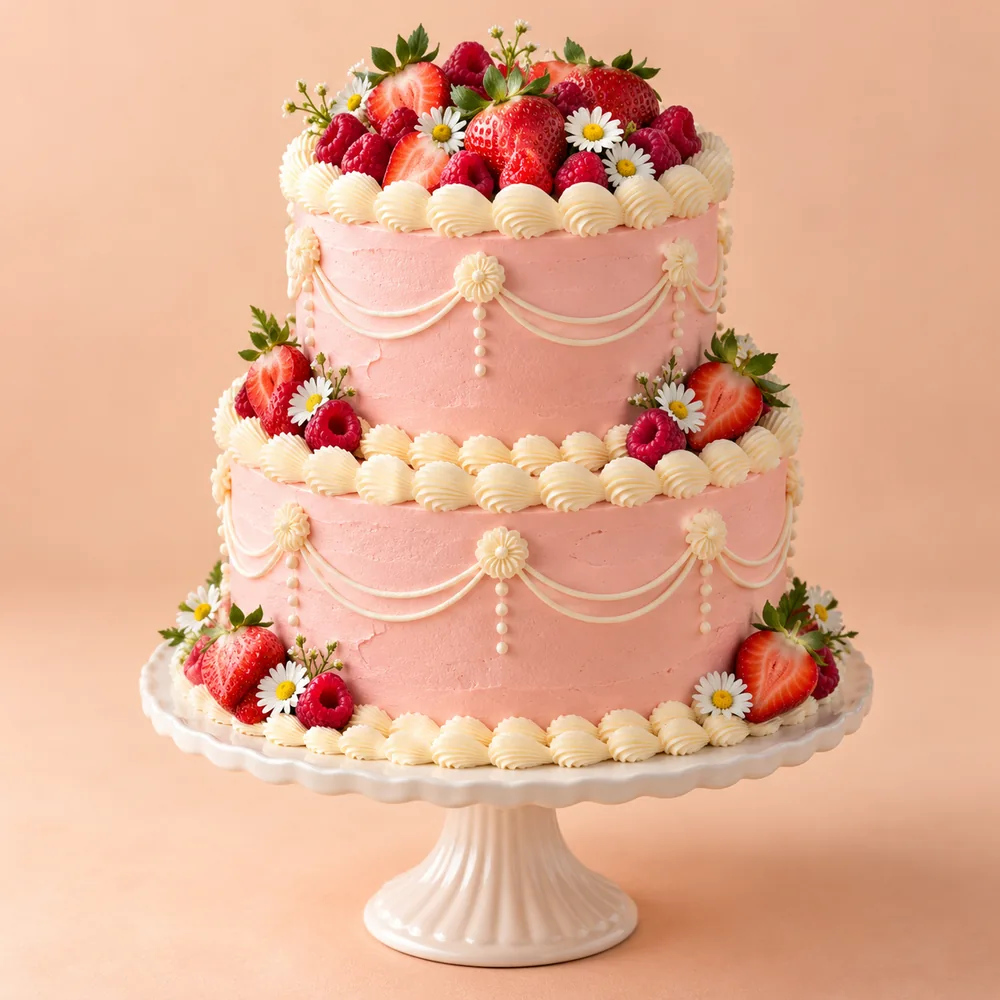
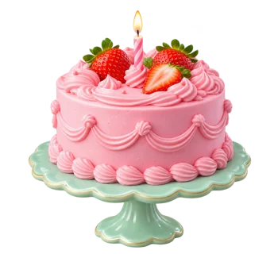

Придумайте свой торт
Выберите ярусы, начинку и декор. Добавьте надпись — или оставьте торт без слов.
Маленькая магия большого праздника
Чуть больше ягод, любимая начинка и слова, которые хочется сказать. Создайте торт, в котором всё — про вас.
натуральные сливки и доставка в день праздника. Состав и условия нужны от клиента.
Оформить заказВаш повод. Ваш вкус.
Ваш неповторимый торт.

Сладко быть собойИ выбирать то, что любишь
01 / Немного кондитерской магии
Соберите свой торт в конструкторе — мы покажем каждый шаг.
Нажмите кнопку и соберите торт по своему вкусу: от ярусов и начинки до посыпки и надписи. На подносе появится ваша идея, а рядом — предварительный расчёт.
Откроется отдельное окно с понятными шагами. Дизайн, состав, дату и стоимость нужно согласовать с кондитером.
02 / Когда хочется сказать «вау»
Идеи для вашего торта.
Демонстрационная AI-галерея,
не реальные работы кондитерской.
Пока нет фотографий в этой категории. Выберите другой повод.
03 / Самое интересное внутри
Пять идей для начинки. Какая станет вашей любимой?
AI-фото срезов и составы — примеры. Реальные рецептуры, аллергены и доступность нужны от клиента.
04 / От идеи до первого кусочка
Выберите ярусы, начинку и декор. Добавьте надпись — или оставьте торт без слов.
Укажите дату и контакты. Кондитер должен подтвердить дизайн, вес, стоимость и возможность заказа.
Уточните получение, оплату и хранение. Доставка возможна после подтверждения её условий.

05 / Истории сладких встреч
Примеры впечатлений о празднике.
Отзывы и имена вымышлены
для демонстрации оформления.
Выбрала клубнику со сливками и кремовые бантики. Получился именно тот нежный торт, который представляла для своего дня рождения. Особенно понравилось, как смотрелась надпись.
Вымышленный отзыв · примерХотелось спокойного дизайна без лишних деталей. Белый торт с цветами красиво вписался в оформление праздника. Фисташка с малиной оказалась нашим любимым сочетанием.
Вымышленный отзыв · примерВыбрал маленький торт с вишенками и короткой надписью. Получился приятный сюрприз для обычного вечера — иногда для праздника достаточно двух кусочков.
Вымышленный отзыв · пример06 / На всякий сладкий случай
Собрали то, что хочется
уточнить перед заказом.
Сроки изготовления и свободные даты нужны от клиента. Укажите дату праздника в заявке — возможность заказа необходимо подтвердить до оплаты.
Наличие рецептур без добавленного сахара необходимо уточнить у кондитера. Для аллергий и особых требований нужен полный состав; обещать безопасность без подтверждения нельзя.
Температура и срок хранения зависят от рецептуры. Попросите кондитера передать инструкцию именно к вашему заказу; подтверждённые условия нужны от клиента.
Сейчас показаны демонстрационные цены. Расчёт учитывает ярусы, начинку, декор и надпись, но не доставку и индивидуальные детали. Реальный прайс и вес должен предоставить клиент.
Адрес самовывоза, зоны, стоимость и часы доставки нужны от клиента. Получение и доступность выбранной даты согласовываются отдельно.
07 / Начнём вашу сладкую историю
Оставьте детали — они помогут кондитеру понять вашу идею.